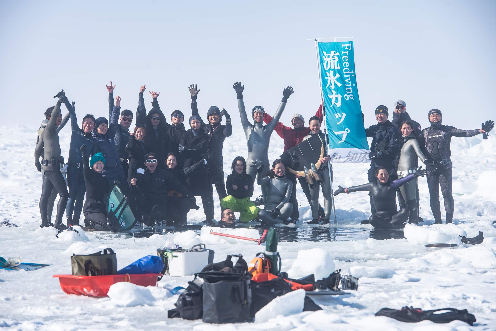
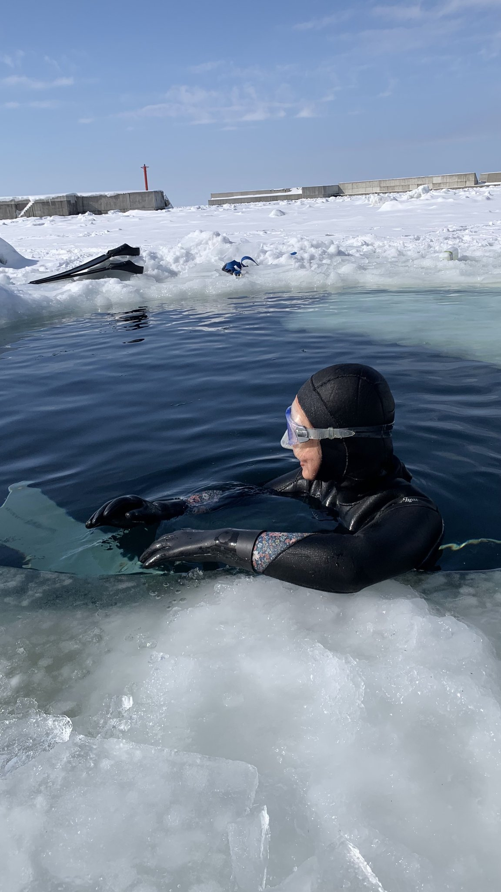
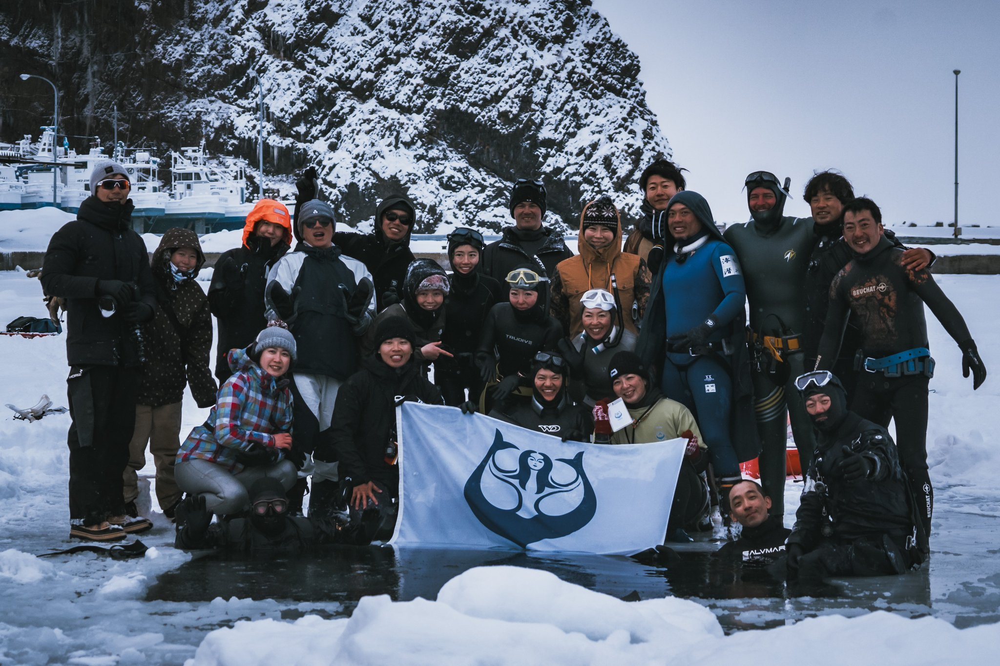
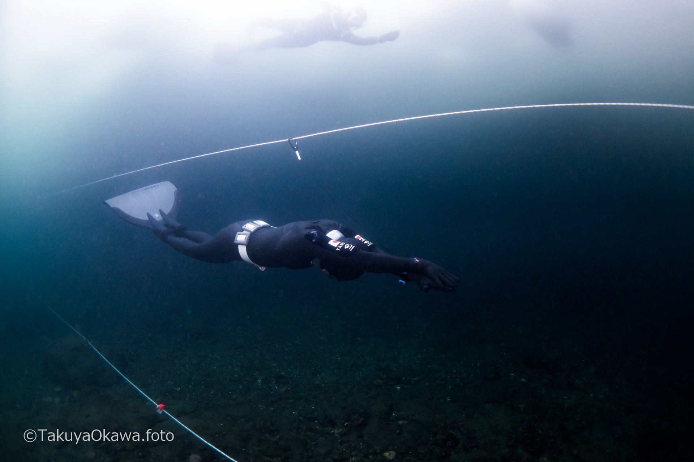

HISTORY
11年以上の歩み
2013

流氷フリーダイビングカップ、始まる
写真家・フリーダイバーの野口智弘氏と、ウトロ出身のフリーダイバー高木唯氏が中心となり、数名の有志で流氷の下を潜るイベントを開始。当初は手探りの状態からのスタートでした。
2013〜2019
ノウハウの蓄積と国際化
安全に開催するための知見とスキルを積み重ね、地元との信頼関係を構築。台湾・韓国など海外からのフリーダイバーも参加する、国際色豊かなイベントへと成長しました。

2020〜2022
中断を経て再始動
世界的な状況により開催を見合わせた期間を経て、感染対策を講じながら少人数での開催を再開しました。

2024
CMAS・ギネス世界記録を樹立
フリーダイバーの寺嶋拓哉氏が企画・申請を担い、尾関靖子選手による世界記録アテンプトを実施。ダイナミックウィズフィン種目で126mを泳ぎきり、CMAS公認・ギネス世界記録に認定されました。ファンダイブイベントも同時開催され、多くのフリーダイバーが集いました。


2027

次の開催へ
これまで積み重ねてきた経験と体制のもと、2027年も知床ウトロで開催予定です。